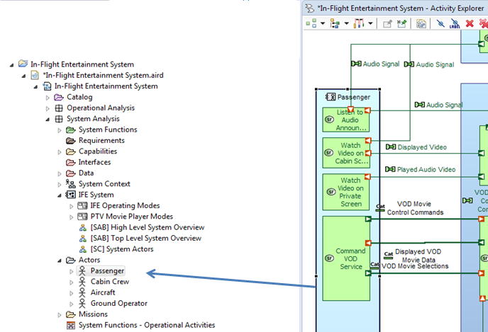
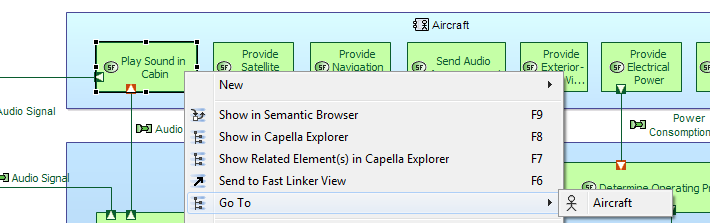

The Ctrl+o command enables to display for a dedicated diagram, in an independent window (as following), every diagram elements.
Shortcuts are available to navigate between views:


When the diagram is dense, the Outline View enables to navigate in the diagram per diagram area.

Directly in diagrams, it is possible to go through large diagrams and move in all directions (horizontally and vertically) thanks to the following commands: